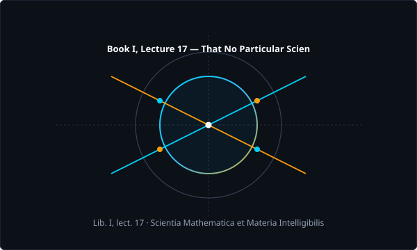

Book I, Lecture 6 — Against Those Who Deny Demonstration or Posit Circular Demonstration¶
Liber I, Lectio 6 — Contra negantes demonstrationem vel ponentes demonstrationem circularem

[lib. 1 l. 6 n. 1] After the Philosopher has shown what the immediate principles are, here he determines the nature of our knowledge of them. And concerning this he does two things: first, he shows that the immediate principles are better known than the conclusion; second, he shows that the falsity of their contraries must also be most certain, at Moreover, not only, et cetera. Concerning the first he does three things.
[lib. 1 l. 6 n. 2] First, he states his intention, saying that because we believe a concluded truth and scientifically know it by possessing a demonstrative syllogism—and this insofar as we scientifically know the demonstrative syllogism—it is necessary not only to foreknow the first principles prior to the conclusion, but also to know them better than the conclusion. Now he adds either all or some, because certain proximate principles require proof in order to become known, and prior to being proved they are no better known than the conclusion: just as the proposition that the exterior angle of a triangle is equal to the two opposite interior angles, prior to being proved, is just as unknown as the proposition that a triangle has three angles equal to two right angles; whereas certain other principles, as soon as they are proposed, are better known than the conclusion. Or in another way: certain conclusions are exceedingly well known inasmuch as they are grasped through sense, such as that the sun is eclipsed; hence the principle through which this is proved—namely, that the moon is interposed between the sun and the earth—is not unqualifiedly better known to us, although it is better known in the order of reason proceeding from cause to effect. Or in yet another way: he says this because he had also stated above that certain principles are known prior in time to the conclusion, whereas certain others become known simultaneously in time with the conclusion.
[lib. 1 l. 6 n. 3] Second, at For always that on account of which, et cetera, he proves his proposition in two ways. First, by a direct argument, as follows: Always that on account of which each thing is such, is itself more so—for example, if we love someone on account of another, as when we love a teacher on account of a student, we love the student more. Now we know conclusions and believe them on account of the principles. Therefore we know the principles more and believe them more than we do the conclusion.
[lib. 1 l. 6 n. 4] Now with regard to this argument it must be observed that a cause is always more potent than its effect. Whenever, therefore, cause and effect share a common name, that name is predicated more of the cause than of the effect, just as fire is hotter than the things heated by fire. Sometimes, however, cause and effect do not share a common name, and then, although the name of the effect does not belong to the cause, something worthier belongs to it instead: just as, although heat does not formally exist in the sun, there is nevertheless in it a certain power that is the principle of heat.
[lib. 1 l. 6 n. 5] Next, when he says, Now one cannot believe, et cetera, he proves the same thing by an argument leading to the impossible, which runs as follows. The principles are foreknown prior to the conclusion, as was established above; and thus at the time when the principles are known, the conclusion is not yet known. If, therefore, the principles were not better known than the conclusion, it would follow that a man knew the things he does not know either more than or equally with the things he does know. Yet this is impossible. Therefore it is impossible that the principles should not be better known than the conclusion. The text is expounded thus: neither one who knows scientifically, nor anyone better disposed in knowing than one who knows scientifically, should there happen to be anyone such (which he adds on account of one who has understanding of the principles, concerning whom this has not yet been made manifest), can believe more in things that do not happen—namely, to be known by him—than in the things he already knows. Yet this will happen unless one among those who believe a conclusion through demonstration foreknows, that is, knows better, the principles. In the Greek text this reads more plainly thus: For it is impossible to believe more than the things one knows those things which one neither happens to know scientifically nor is better disposed toward than if one happened to know them scientifically.
[lib. 1 l. 6 n. 6] Third, at For since it is necessary to believe more, et cetera, he explains what he had said, stating that the assertion that it is necessary to believe either all or some of the principles more than the conclusion must be understood of one who is to acquire scientific knowledge of it through demonstration. For if the conclusion were known from elsewhere, such as through sense, nothing would prevent the principles from not being better known than the conclusion in that respect.
[lib. 1 l. 6 n. 7] Next, when he says, Moreover, one must not only, et cetera, he shows that one must not only know the principles better than the conclusion to be demonstrated, but also that nothing may be more certain to him than that the opposites of the principles are false. And this is because one who possesses scientific knowledge must be unshakeable with respect to the principles, assenting to them most firmly. For whoever doubts the falsity of one of two opposites cannot cleave firmly to its opposite, because he always fears lest the other opposite be true.